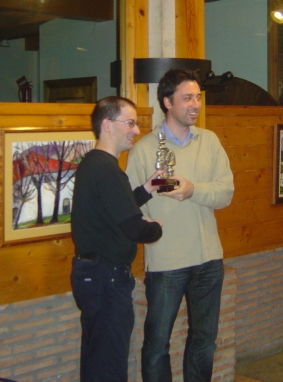
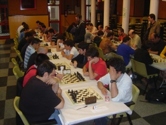

Club de Ajedrez Agustín de Leiza |
| » inicio » socios del club » cto. por equipos » últimos torneos » enlaces |
Torneo de Tolosa de pintxetas21-06-09Este domingo hemos jugado el
torneo que organiza el club de Tolosa en sus fiestas patronales de San
Juan de pinchetas. En este caso nuestros "sacrificados" comedores
fueron Iosu, Claudio, Javi y Artiz. Nos reunimos 15 equipos para el
torneo y el posterior ágape, venidos de prácticamente
todos los rincones de la orbe.

Claudio recogiendo el trofeo al segundo puesto. El torneo tenía un claro favorito desde el principio, éste era Fomento que presentaba unos 3 primeros tableros que daban miedo, Agirretxe, Ofre y Benito, y este supuesto dominio se vió claro en la primera ronda cuando nos infligieron un rosco, ciertamente injusto vistas las partidas, ya que Claudio perdió solo un final con dos peones de más e Iosu no pudo con su bestia negra Agirretxe, a pesar de haberle ganado la dama.  El benjamin de Fomento, Agirretxe, recogiendo la txapela. No cundió el desánimo y el equipo se puso el mono de trabajo y no bajó del 3-1 en las siguientes 7 rondas, incluyendo 4 roscos en el camino con lo que se remontaron posiciones. Las últimas 6 rondas ya nos vinieron un poco largas y a pesar de no perder ningún encuentro, no goleamos como antes. Al final conseguimos el segundo puesto a 4 puntos de Fomento, con lo que de no haber sido por el primer 4-0 hubiésemos competido con ellos por el primer puesto. 
Buen torneo del equipo que se supo reponer bien al primer revés
inicial y en el resto del torneo empató con Fomento. Vista general de la sala de juego.  Iosu y Aritz después de llenar el buche esperando a la entrega de premios. |